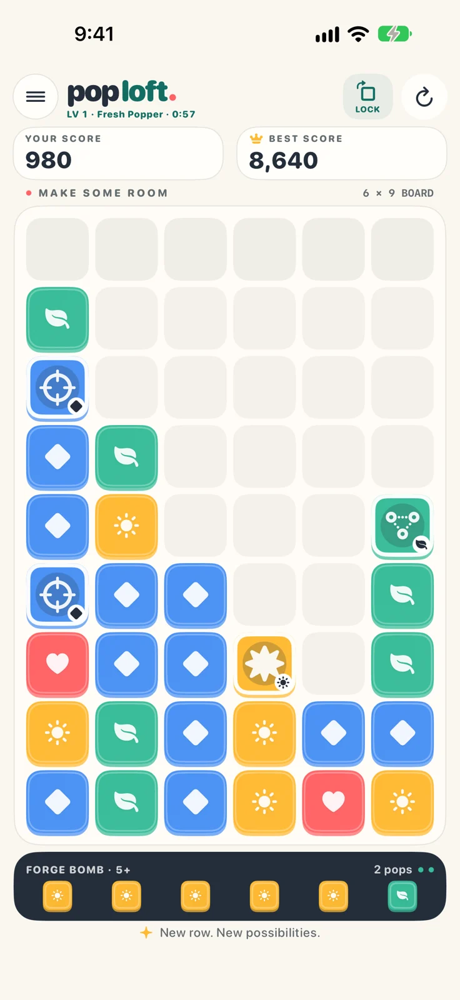
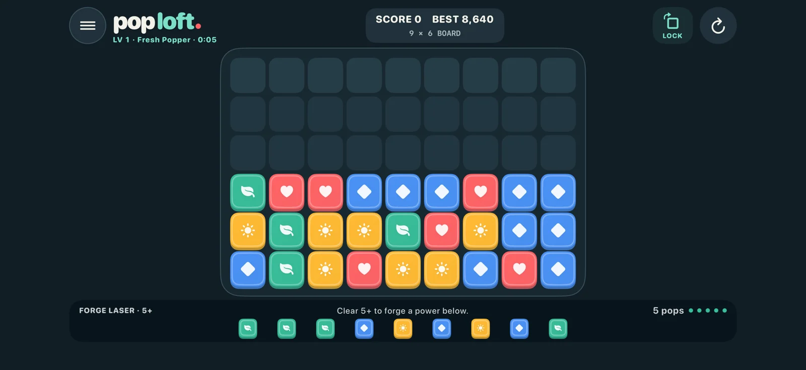

Tap a match.
Forge your next move.
Poploft is a colorful block puzzle where a big clear builds what comes next. Forge powers into the incoming row, charge them up, and set off a satisfying chain.
Simple to start. Room to plan.
Choose a connected group of two or more matching blocks. The rest fall straight down. Bigger clears earn bigger scores, and the exact next row is always visible. No countdown timer forces you to rush.
Build a little magic.
Clear five or more to forge a power into your chosen column. Make another big clear there before the row arrives to charge it. Laser, Bomb, Stitch, Paint Splash and Frost give you five ways to shape your next move.
Your next level starts with a pop.
Earn XP, unlock rank titles and celebrate each level. Track your playtime, biggest clear, best power chain and personal best. Progress is saved locally on each device.
Find your favorite way to play.
Square blocks, Light or Dark appearance, and optional sound. Play portrait or landscape on iPhone and iPad, or settle into a landscape game with the Siri Remote on Apple TV. iPhone and iPad have occasional ads between games; Apple TV has no ads. Gameplay works offline.

